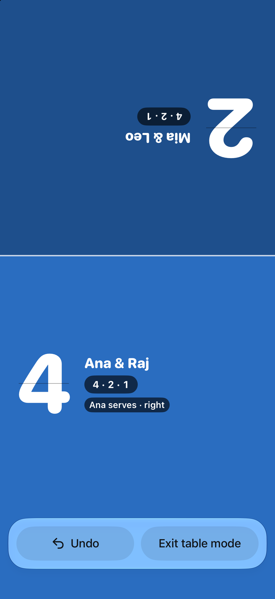
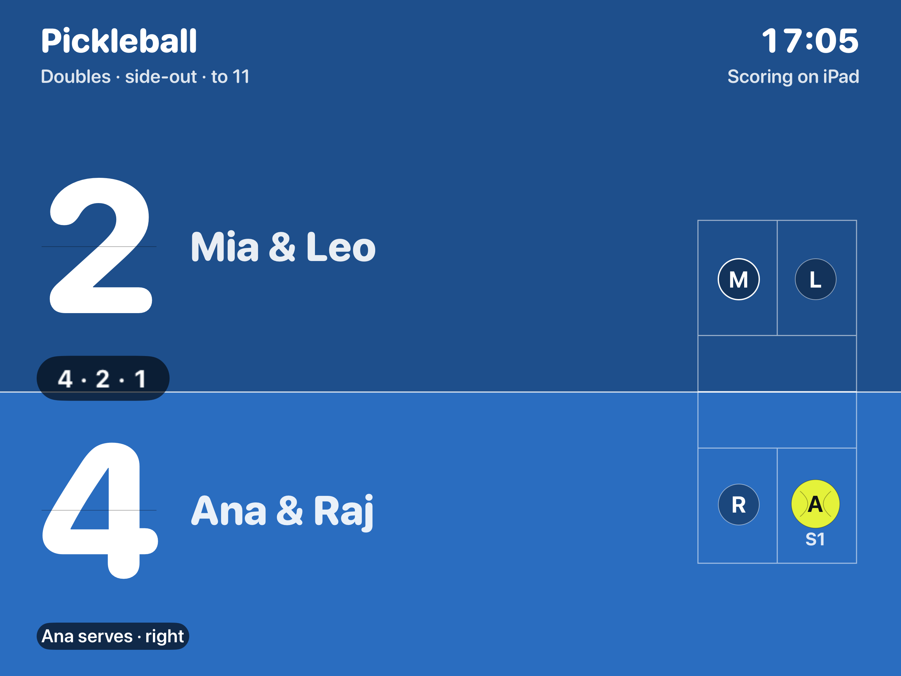
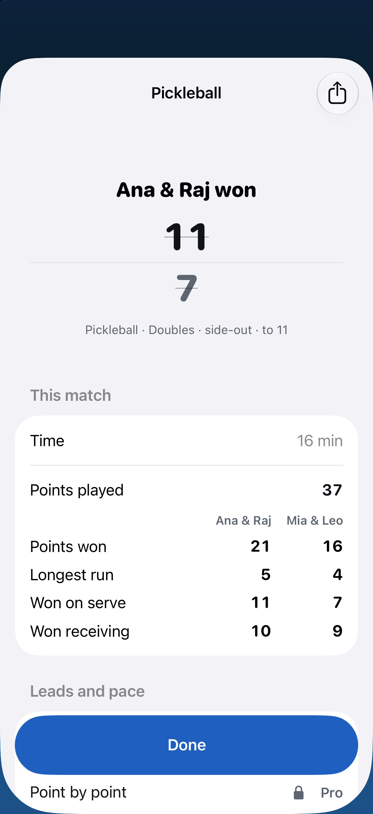
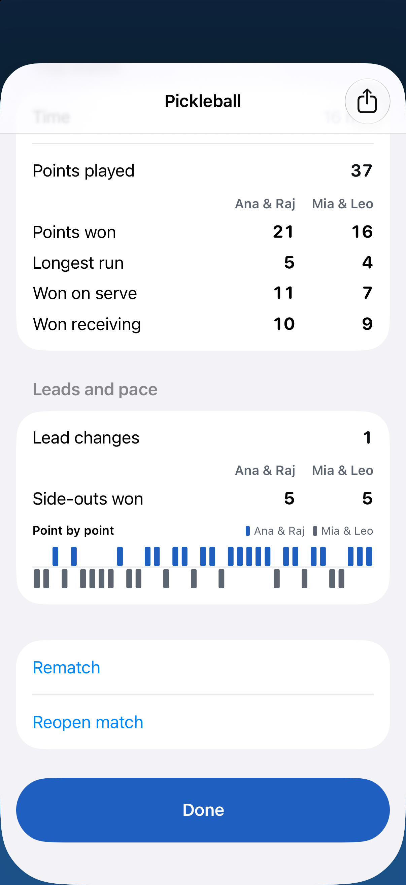

Tallyline
Score tennis on iPhone & Watch · App Store · updated 2026-10-17
What is new
Version 1.2 scores pickleball, padel and tennis on iPhone and iPad as well as Apple Watch. It adds Table mode, Courtside TV on an AirPlay or cable display, match stats, keyboard shortcuts on iPad, a Control Center button and Siri phrases. Version 1.2 had not been submitted to App Review on 17 Oct 2026; the live version is 1.1.
Facts
- Version
- 1.2 (build 2026101502), built with Xcode 27.1
- Platforms
- iPhone, iPad, Apple Watch
- Languages
- English (US, UK, Australia, Canada), Spanish (Mexico)
- Price
- Free to use with no ads. Tallyline Pro is one optional purchase with Family Sharing, no subscription.
- Privacy
- No ads. Heart rate stays on the player's own devices.
- Accessibility
- Tap zones have VoiceOver labels and each point is announced to VoiceOver; with Reduce Motion on, the end-of-game card fades in instead of scaling.
- Window
- Holiday doubles 11 Dec 2026 to 1 Jan 2027; match stats 26 Dec 2026 to 10 Jan 2027
- Developer
- One developer, Dubai
Screens
Device captures of the screens described in the nomination. No marketing frames.




Why now
- U.S. Pickleball Participation Statistics SFIA, 2026
- What are the most common New Year's resolutions for 2026? Deseret News, 30 Dec 2025